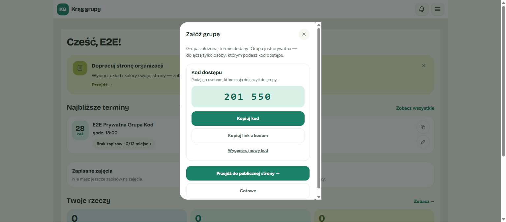
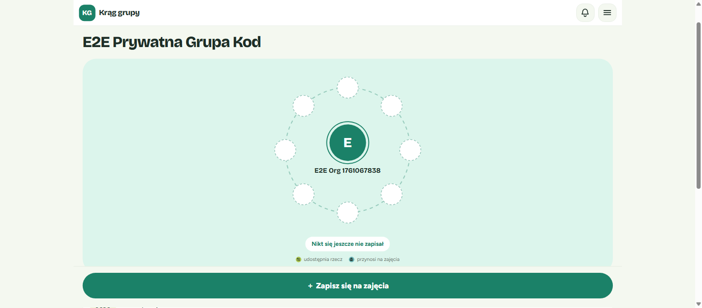
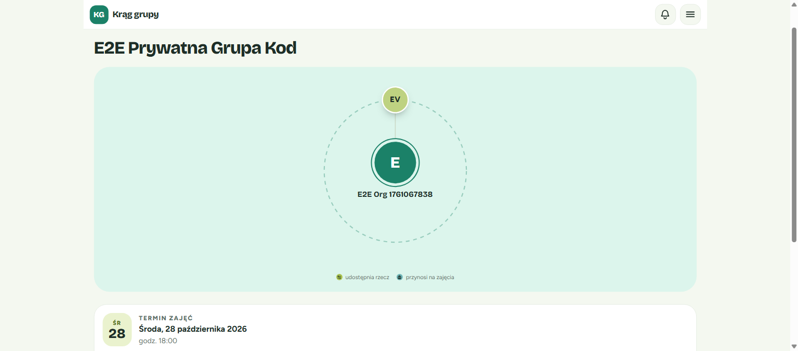
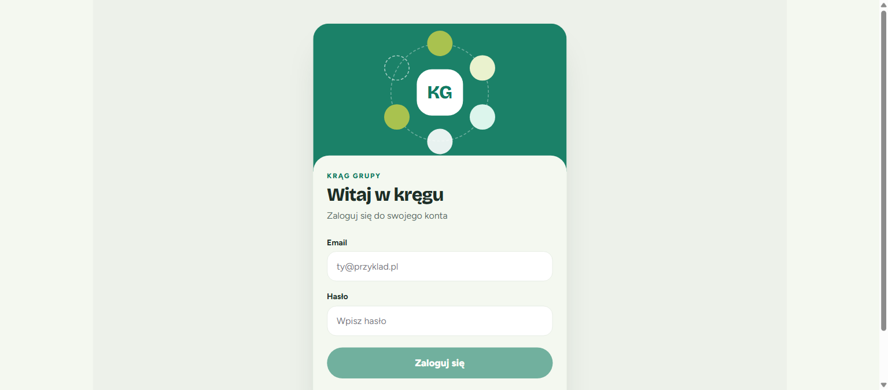
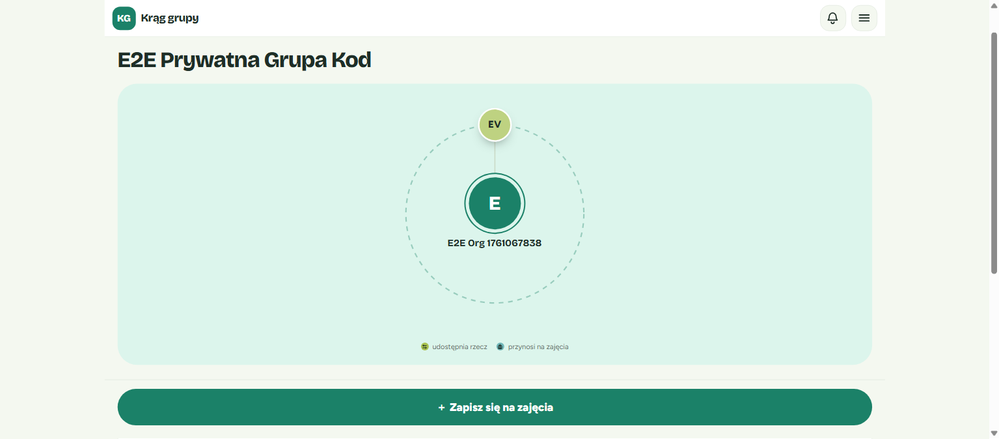
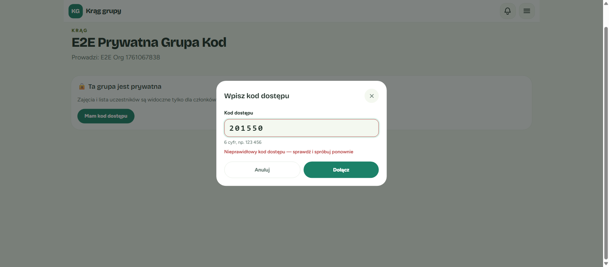
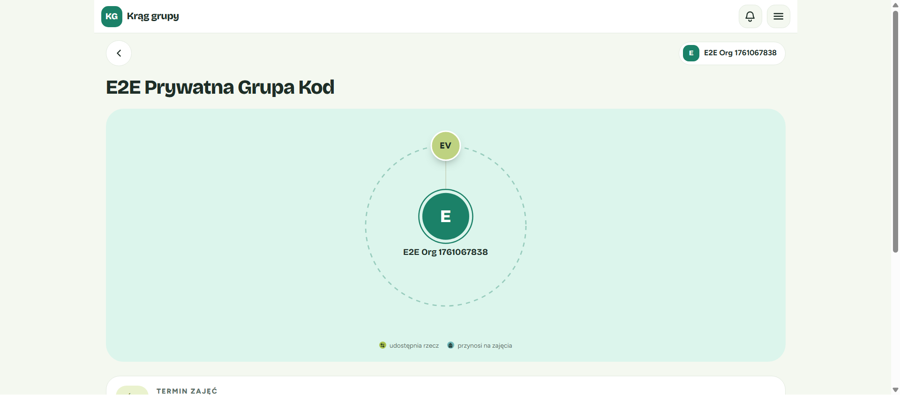

Test environment
| Base URL | http://localhost:5173 (Vite; /api → uvicorn 127.0.0.1:8080, DB at 0060) |
|---|---|
| Browser / viewport | Chromium (Playwright MCP), ~1536×674 CSS px |
| Accounts | 7 fresh UI-registered accounts: organizer e2e-org-1761067838@example.com, visitor e2e-vis-…, and e2e-third-… through e2e-seventh-… |
| Data | PRIVATE group "E2E Prywatna Grupa Kod" (5856323e-…), one term on 2026-10-28 18:00 (cap 12); code 201550 regenerated to 190273 |
Scenarios
✅ (a) Organizer creates a PRIVATE group via the stepper
| # | Action | Actual | Status |
|---|---|---|---|
| 1 | Name + "Prywatna — (dostęp z kodem)" → term 2026-10-28 18:00, 12 seats → Dodaj | Done screen with the "Kod dostępu" card showing 201 550 | ✅ |
| 2 | Kopiuj kod | Clipboard 201550 | ✅ |
| 3 | Kopiuj link z kodem | …/term/7c51b369-…#code=201550 (fragment, no ?code=) | ✅ |


✅ (b) Organizer opens GroupDetailsPage
| # | Action | Actual | Status |
|---|---|---|---|
| 1 | Open /panel/grupy/{id} | Widoczność "Prywatna (dostęp z kodem)"; card shows 201 550 | ✅ |
| 2 | Wygeneruj nowy kod | Labelled alertdialog "Wygenerować nowy kod?" | ✅ |
| 3 | Anuluj | Closed, code unchanged, focus returned to the trigger | ✅ |


✅ (c) Logged-out visitor opens the link
| # | Check | Actual | Status |
|---|---|---|---|
| 1 | Gate copy | "Ta grupa jest prywatna" + "Masz kod? Zaloguj się, żeby go użyć." | ✅ |
| 2 | Login/register returnTo | /login?returnTo=%2Fe2e-org-kod%2Fgrupa%2F…%2Fterm%2F…, no code | ✅ |
| 3 | sessionStorage | pendingJoinCode:5856323e-… = {code, savedAt} | ✅ |


✅ (d) Visitor registers through the gate and is auto-joined
| # | Check | Actual | Status |
|---|---|---|---|
| 1 | URL after return | No #code= | ✅ |
| 2 | Auto-submit | Exactly one POST …/join-code → 200 | ✅ |
| 3 | Toast and content | "Dołączono do grupy"; term content visible; storage cleared | ✅ |

✅ (e) Visitor RSVPs
POST …/rsvp → 201; "Zapisanych 1 z 12"; visitor listed under "Zapisani i ich rzeczy".

✅ (f) Wrong code
#code=000000 → 409. The alert reads "Nieprawidłowy kod dostępu — sprawdź i spróbuj ponownie" and the sheet stays open with aria-invalid; the hash and storage are cleared.

✅ (g) Rate limit on the 11th attempt
| Attempts | Result | Status |
|---|---|---|
| 1–10 (wrong) | 10 × 409 | ✅ |
| 11 (wrong) | 429, Retry-After: 887, "Za dużo prób wpisania kodu — spróbuj ponownie za 15 min" | ✅ |
| 12 (correct, pasted "201 550") | Normalized to 201550; still 429 (Retry-After: 880) | ✅ |

✅ (h) Member reopens the code link
No sheet, hash stripped, content shown, no join-code request.

⚠️ (i) 401 during redeem: passed with issues
| Variant | Actual | Status |
|---|---|---|
A: token corrupted, then full load of the #code= link | /api/people/me 401 redirects to /login before /access; no pendingJoinCode; after login the plain gate shows and the code must be retyped | ⚠️ |
B: token corrupted on the settled gate, then in-app #code= | Redeem 401 → /login; pendingJoinCode kept; after login exactly one redeem → 200, joined | ✅ |



✅ (j) Second link over a 409 sheet
With the #code=111111 409 sheet open, an in-app hash change to #code=201550 sends one redeem → 200 {"created":true}. The sheet closes and the toast "Dołączono do grupy" appears.

✅ (k) Organizer regenerates the code
| # | Check | Actual | Status |
|---|---|---|---|
| 1 | Confirm regenerate | 200; card shows 190 273; "Wygenerowano nowy kod"; no follow-up GET | ✅ |
| 2 | Old code, new account | 409 with the wrong-code message | ✅ |
| 3 | Visitor from (d) | Still a member (content shown) | ✅ |
| 4 | New code, same new account | 200 {"created":true} | ✅ |



⚠️ (l) Logs / code never in a URL: passed with issues
Of 279 captured request URLs, 0 contained 201550 or 190273; the code travels only in the POST body. The uvicorn console log was not verified because it was not accessible.
Discrepancies
critical None. major None.
minor 5.3-1 Code lost when the token is already stale at page load
| Spec | User story 4; amendment: TermPage writes pendingJoinCode while loginRequired |
|---|---|
| Actual | The app-shell 401 redirect pre-empts /access, so no entry is written and the code is lost after login |
| Impact | The user must retype 6 digits; membership and security are unaffected |
| Fix | Persist pendingJoinCode as soon as a valid #code= is parsed (existing TTL and redeemStarted guards) |
| Workaround | "Mam kod dostępu" → type the code |
cosmetic 5.4-1 Copy buttons lack the mockup's "⧉" glyph
Text-only "Kopiuj kod" / "Kopiuj link z kodem". Add an aria-hidden icon, or accept the simplification.
cosmetic 5.4-2 Nested <main> on the member term page (pre-existing)
Two main[tabindex=-1] landmarks. This is outside the feature; track as a follow-up.
Console & network
| Source | Message | Severity | Impact |
|---|---|---|---|
GET /api/organizations/mine | 404 for guest accounts | Cosmetic | Pre-existing, unrelated |
POST …/join-code | 409 / 429 "Failed to load resource" | Cosmetic | Expected; the UI shows Polish messages |
/people/me, …/join-code | 401 | Cosmetic | Only in the deliberate stale-token runs |
Spec alignment
Fully implemented: R7/R8 organizer GET and regenerate; R9 redeem order; R4 limiter numerics; R23 sheet a11y/validation/paste normalization/Esc; amended R24/R26 (#code=, immediate strip, sessionStorage handoff, 401 keeps entry, G2 remount); R25 card on the stepper and the details page; the three gate copy variants.
Partially: "code survives login" with an already-stale token (5.3-1).
Not implemented: none observed. Extra: the inline card status line serves as the "toast lokalny".
Exit criteria
| Criterion | Status | Evidence |
|---|---|---|
SC1 join + RSVP in one sitting, anon #code= path | ✅ | (d), (e) |
| SC2 code only in organizer endpoints | ✅ | No code seen outside organizer responses or in URLs; key-set tests cover the rest |
| SC3 limits + integer Retry-After, correct code locked → 429 | ✅ | (g) |
| SC4 wrong vs no-code indistinguishable | ✅ | Single message observed; "no code" is unreachable in the UI |
| SC5 removal + migrations | ✅ | Outside E2E scope; DB at 0060, no "Poproś o dostęp" UI |
| SC6 suites green | ✅ | Outside E2E scope (test-suite-results.md) |
| SC7 mockup fidelity, no raw HTTP text | ⚠️ | 3 match · 3 minor · 0 drift |
| SC8 lazy GET never 500 or null | ✅ | The card always showed a code |
Recommendations
- Must fix before merge: none.
- Should fix soon: 5.3-1.
- Nice-to-have: 5.4-1, 5.4-2.
Conclusion: GO WITH CAVEATS. Merge, and track 5.3-1 as a follow-up (or fix it first if the stale-session flow matters for launch). 21 screenshots are in verification/screenshots/.